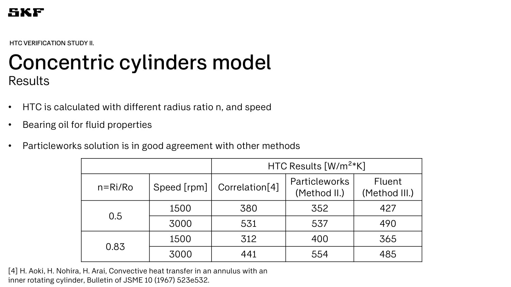
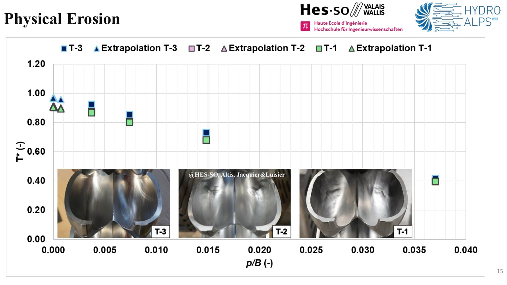
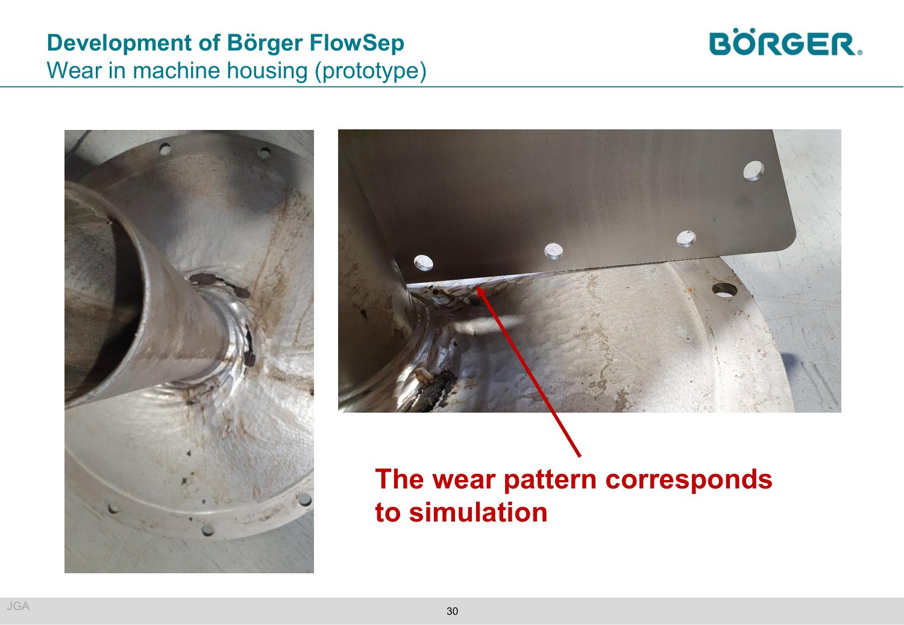

On October 7, Particleworks users filled the BPER FORUM Monzani in Modena for a day built around three questions: where does the heat go, where does the air go, and where does the material wear?
Speakers from a bearing maker, a pump manufacturer, a hydropower research project and several engineering firms answered them with the same discipline. Each put simulation next to a thermocouple, an optical sensor or a worn prototype, and said plainly how well they agreed. This post follows six of the talks, each introduced by its speaker, with the engineering that mattered, the one slide that carries the most information, and a link to the exact moment in the recording. The slides are in the proceedings.
From side effect to deliverable
Three talks treated temperature as the result to deliver. They share one trick: never run the oil and the solid together in time. Oil reaches its flow pattern in seconds, metal needs hours. So the oil is simulated briefly, its heat-transfer coefficient (HTC) and near-wall temperature are handed to a steady conjugate-heat-transfer (CHT) solution, and the two are iterated until nothing moves.

CHT Analysis of a Reciprocating Pump
A pump lubricated by oil sloshing, cooled by natural convection, and a thermal model that is closed by physics, not by fitting.
The case was a volumetric water pump with 3.7 kW at the shaft and 85–90% mechanical efficiency, so roughly 0.4–0.55 kW of heat to dissipate, oil at 63 °C, ambient 22 °C. A fully coupled unsteady run would need double precision and a transient far too long, so a few seconds of sloshing give the HTC map and a steady CHT converges in minutes.
The delicate input is where the heat is born. Loads on the kinematic pairs were not available, so instead of trial and error the team ran a dynamic analysis of the pump, took friction coefficients from the literature and split the power between contacts. Each source is a local volumetric heat source in a thin slice of CAD next to the contact.
The results show where the model is right and where it is not. The shaft sits at 70–80 °C as in the test, and a hot spot at the piston–seal contact appears exactly where seals degrade in service. The small bearing comes out hotter than the large one, contrary to experiment: a sign that sloshing needs a particle refinement there.
Q̇shaft→oil = Σ HTCi(Ti−Toil)Ai = Σ HTCj(Toil−Tj)Aj, on a uniform surface mesh built from the HTC map. If it is not zero, scale the thermal power, the oil temperature or the external HTC and iterate.Key points
- Sloshing is decoupled from CHT: seconds of oil flow, minutes of steady CHT.
- Six of seven thermocouples within 3.1 °C of the test; the worst, the open-side bearing, 5.4 °C.
- The seal hot spot is predicted where seals fail in practice.
- The setup can take longer than the run: the iteration itself is cheap.

Integrating Particleworks into SKF Engineering Tools: Part I
Before trusting a heat-transfer coefficient inside a bearing tool, verify it on the simplest cases that exist, and report the spread honestly.
SKF framed thermal analysis as a ladder: lumped networks, finite-element thermal models, FE with CFD-derived HTCs one way, then fully coupled CFD. Each step buys fidelity and costs time. Their plan is the one-way rung inside the BEAST bearing simulation tool: BEAST provides dynamics and heat sources, Particleworks provides the HTCs.
The verification used a sphere in a uniform flow and oil between concentric cylinders, the inner one rotating. Against the Aoki correlation the two numerical methods scatter by similar amounts, which is the honest message: the correlation is not truth either. The vortex pattern appeared with mostly default settings, with one caution: watch the velocity (Courant) limiter.
The roadmap is concrete: a segmented bearing first, ideally with a cyclic boundary condition, which SKF has asked for, otherwise a full bearing with strong local refinement.
Key points
- Concentric cylinders, bearing oil, radius ratio 0.5 and 0.83, 1,500 and 3,000 rpm.
- Particleworks HTC 352–554 W/m²K against 312–531 from the correlation.
- Once a bearing rotates there is no good reference model, so complexity is added step by step.
- Request to the roadmap: cyclic boundary condition for bearing segments.


Study of the Lubrication on Carrier Roller using a CFD 3D-MPS Method
A rotating carrier roller, a two-phase iterative CHT, and a bench test that agrees to within 7%.
A carrier roller holds the track chain of an excavator: the shell rotates, the shaft stays fixed, and the internal temperature decides whether the seals survive. Track One modelled every component with its own motion and material, and added the thermal boundaries a real roller has: two heat-generating surfaces (seal and bushing), a heat sink at the chain contact and on the circumferential surface, and convection to air.
The iterative steady-state CHT has two phases. Phase 1 runs the oil alone with the solids frozen and extracts averaged HTC and near-wall temperature maps: a few hours. Phase 2 maps them on the solids and solves the new steady temperature field: a few minutes. The loop stops when the solid field no longer changes, here after three to four passes. Oil viscosity follows an Arrhenius–Vogel law, so temperature feeds back on the flow at every pass.
R″c,eq = R″c,real / τ. Air convection used HTCair = 5.7 + 3.8·v.Key points
- Phase 1 (oil only, hours) and phase 2 (solid mapping, minutes) alternate until the solid field is stable.
- Bench test: laser sensors outside, a probe in the oil, load and speed applied through the wheels.
- Next: oil rheology evolution, FEM coupling for deformation, critical operating conditions.
Measure it before you simulate it
Aeration changes viscosity, density, film thickness and oxidation. The afternoon showed how to put a measured number on it before the model is asked to predict it.

Direct Optical Air-in-Oil Measurement as an Enabler for Accurate Simulation of Gearings and Hydraulic Systems
Two oils with the same air content can behave very differently, so the aeration model has to be calibrated on bubbles, not on a percentage.
An optical inline sensor sees what a single air-content number hides. In one oil, 361 bubbles of 132 µm offered 18 m² of oil–air contact surface; in the other, 1,289 bubbles of 68 µm offered 32 m². Same percentage, almost double the interface, so very different oxidation, cavitation and compressibility behaviour.
For simulation this means calibrating the Particleworks aeration model on two things: the total air generated and the bubble size distribution. The demonstration was a differential gear at 130 rpm with 1.4 litres of oil and 2.7 million particles of 0.8 mm. Before calibration the model returned 0.12% air with 800 µm bubbles, simply the particle size. After calibration with deepfluid data: 0.45% air and 186 µm, against measured 0.43% and 180 µm.
The caveat came from the room. A calibration belongs to an oil and its additive package; change the additives and it must be repeated. Coefficients can be scaled with speed from a reference speed, but the temperature dependence is still an open point.
Key points
- Same air content can hide very different bubble populations.
- Calibrate generation rate and size distribution: 0.12% / 800 µm becomes 0.45% / 186 µm.
- A calibration is specific to an oil and additive package.
- Temperature scaling of the coefficients: open point.
Simulating what breaks
Two very different machines, one question: can a particle simulation say where the hardware will wear before it does?

Moving Particle Simulation of Eroded Pelton Runners
A Pelton runner, a single jet, and the efficiency lost to erosion computed on a GPU.
The context is ReHydro, a Horizon Europe project of 18 partners and about 12 million euros that runs to 2028. Europe’s hydropower fleet is 50–55 years old and now balances wind and solar, so runners see sediment and cavitation erosion. Inspecting one means two or three days without production, which is why a prediction of the efficiency loss has real value.
The set-up is lean: a single jet, imposed rotation, viscosity neglected, time step near 10−6 s and a Courant limiter of 0.2. Several revolutions are feasible, where a finite-volume code takes more than a week. For a new runner, dimensionless torque approaches 1 as the particle size drops from 5 to 0.5 mm, and a linear extrapolation to zero size lands close to it.
For eroded runners, artificial erosion (flat or rounded splitter, enlarged cut-out, worn tip) was compared with analytical and published efficiency drops. Then came real runners: new, after three years and after five, when the owner decided to refurbish. The torque decrease was predicted accurately.
Key points
- Single jet, imposed speed, CFL limiter 0.2: 5 minutes to 1.5 days on an NVIDIA L40S.
- Flat-splitter efficiency drop follows the analytical trend, closer with finer particles.
- Next: let the runner speed respond to load rejection, which needs the shaft-line inertia.
- Longer term: a brick of a digital twin for owners who ask what 2% of efficiency costs them.


Simulation of Sand Separation and Wear in the Börger FlowSep
A sand separator for biogas plants, simulated before the second prototype, and a wear map that the hardware confirmed.
Biogas plants are moving from maize silage to manure, which brings stones, sand and soil. Sand settles in the final storage tank (about 1.9 m after 36 months in the case shown), blocks pipes and tankers and shrinks usable volume. The FlowSep is a cyclone-like stage that sends the heavy phase to output 1 and a clean thin phase to output 2. Sand is only about 1% of the material, in fractions of 0.4–0.5, 0.3–0.4 and under 0.3 mm.
Börger measured flows, densities and the ash content (800 °C burns off the organics) and EnginSoft built the Granuleworks–Particleworks model. The reference case deviated by less than 10% in mass flow from the tests. About 10% of the sand leaves through the wrong outlet, and it is the small particles: large ones are centrifuged radially, as intended.
Then the surprise. Börger’s instinct was to raise the flow rate. The simulation showed the opposite: at the higher flow rate the coarse fraction reaches the clean output and the badly separated share rises from about 10% to about 25%. Better to go slower and separate better.
Finally, wear. The model flagged high interaction at the back plate and near the blades, and the prototype wore exactly there after roughly half a year of round-the-clock operation.
Key points
- Evaluation parameter: number of fraction-1 particles in the clean output.
- Higher flow rate loses separation efficiency, against the first intuition.
- Simulated wear zones match the prototype: back plate and bending edge.
- Use: decide whether to widen the radius or lengthen the unit before the next prototype.

The questions that mattered
- How much effort is the manual iteration? Three to five passes, and a steady CHT takes minutes on a GPU (R&D CFD).
- Does a calibration transfer between lubricants? No: the same base oil with other additives needs a new one, and the temperature trend can flip sign (deepfluid).
- Why such a basic first verification? Because once a bearing rotates there is no good reference model; complexity is added step by step (SKF).
- Why dimensionless results? Owners ask what 2% of efficiency lost to a single flood costs them over a year, not for newtons (HES-SO).
What we take home
Three habits
- Trust comes from a check that does not depend on the model: an oil balance at zero, a thermocouple, a bubble sensor, a worn prototype.
- Cost was stated, not hidden: three to five iterations, a day per case, minutes for a steady solution, a particle size you can extrapolate away.
- The physics is split on purpose: fast flow in particles, slow heat in a steady solid, measured air as calibration data.
Meshless CFD in Modena looked less like a promise and more like a tool with a known price.
Get the Modena proceedings
Slides, recordings and the key findings of each released presentation, free after a short form.
Open the proceedings